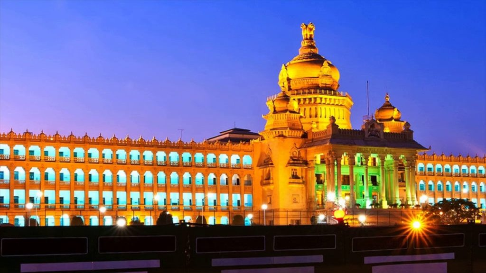
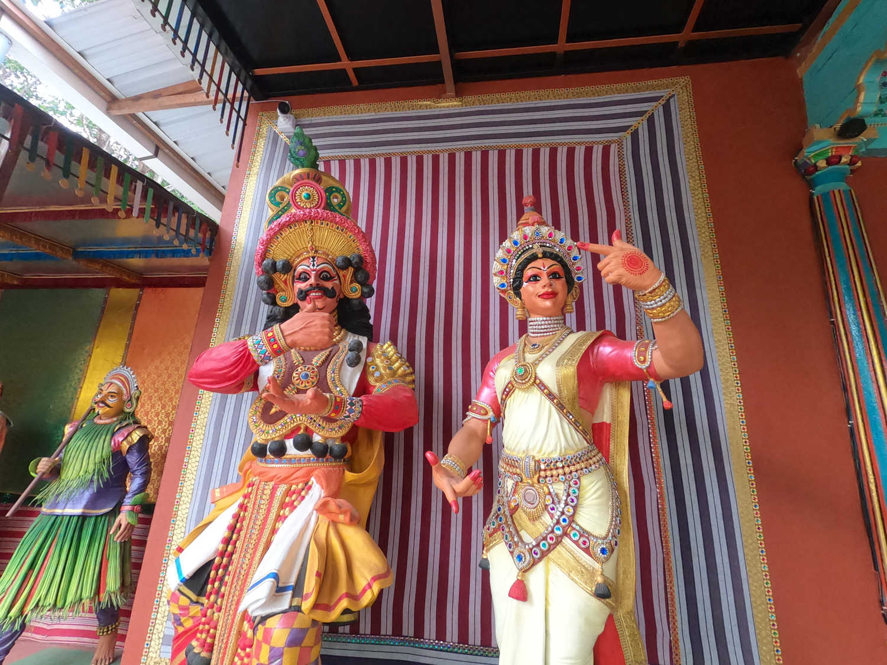
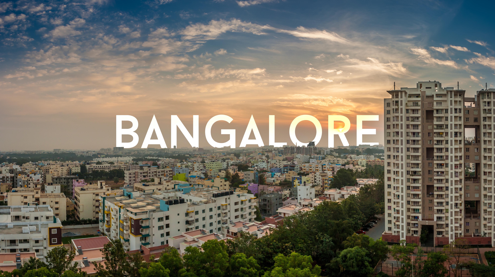
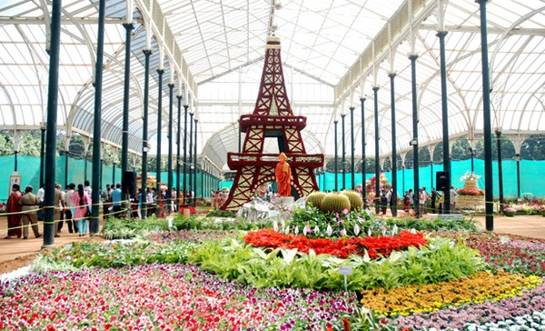

History
Bangalore, officially known as Bengaluru, is the capital city of the Indian state of Karnataka. It has a rich history dating back to the 16th century when it was founded by Kempe Gowda, a local chieftain. Over the centuries, Bangalore has evolved from a small town into one of India's major metropolitan cities. 9th Century: Bengaluru is known as 'Bengaval-uru' or 'city of guards' in inscriptions. 12th Century: The city is renamed 'Benda-Kalu-ooru' or 'town of boiled beans.' 1537: Kempe Gowda I founds Bengaluru, building a mud fort. 1761: The fort is rebuilt in stone. 1831-1881: Bengaluru serves as the British administration's headquarters. 1947: India gains independence, and Bengaluru becomes the capital of Mysore. 1973: Mysore is renamed Karnataka; Bengaluru remains the capital. 2006: Bengaluru is officially renamed from 'Bangalore.' 1954: Vidhana Soudha, the state legislature seat, is constructed. Early 2000s: Bengaluru's IT industry experiences rapid growth. Present: Bengaluru is India's Silicon Capital and a thriving metropolis.
Culture
Bangalore is known for its vibrant and cosmopolitan culture. It is often referred to as the "Silicon Valley of India" due to its thriving IT industry and large number of tech companies. The city is also home to numerous educational institutions, research centers, and cultural organizations. Bangalore culture is in fact a fusion of various cultures. Bangalore's vibrant and rich cultural heritage makes it a city of diversities. Multi cultural spirit can also be witnessed during any festival when the folks iron out the region, religion, class, caste barriers and take part heartily.
Economy
The economy of Bangalore is driven by various sectors including information technology, biotechnology, aerospace, telecommunications, and manufacturing. Many multinational corporations have their offices and development centers in Bangalore, making it one of the fastest-growing cities in Asia. The economy of Bengaluru contributes over 43.65% to the economy of the State of Karnataka, accounting for 98% of the Software Exports of the State. The establishment and success of high technology firms in Bangalore have led to the growth of Information Technology (IT) in India.
Attractions
Bangalore offers a wide range of attractions for visitors, including historical landmarks, gardens, parks, museums, and shopping centers. Some popular attractions include Lalbagh Botanical Garden, Cubbon Park, Bangalore Palace, Tipu Sultan's Summer Palace, and Vidhana Soudha. A tour to Bangalore presents its visitors with many interesting choices to keep themselves entertained. There are many places to see in Bangalore, each promising a unique enriching experience. Tourists can also find many interesting sightseeing places in and around Bangalore city.
Contact
Bangalore CityKarnataka, India
Phone: +91 1234567890
Email: info@bangalore.com